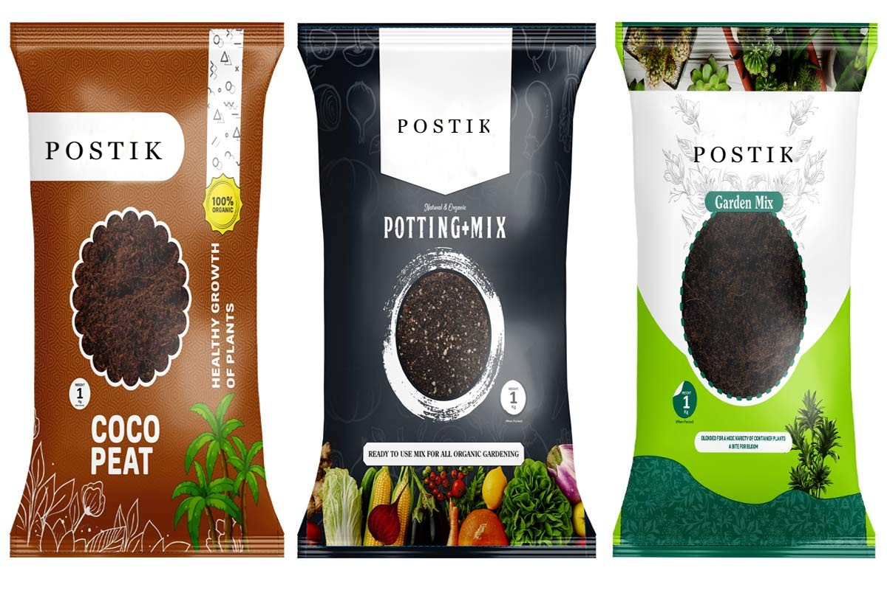

Our Manure Products and Services
At Postik, we offer a range of manure products designed to meet the diverse needs of farmers. Our offerings include:
Organic Manure:
Enhance soil fertility and boost crop growth with our 100% organic manure.
Composted Manure:
Improve soil structure and nutrient content with our high-quality composted manure.
Custom Blends:
Tailored manure blends to meet specific crop requirements and soil conditions.